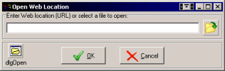
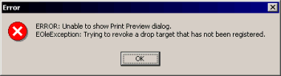
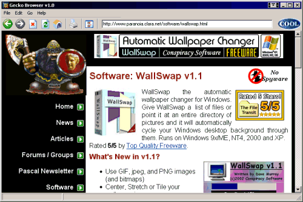

Articles
Taming the Lizard
Vote For Us:


Would you like to display HTML in your applications using an open source solution? The Gecko
Runtime Environment by the Mozilla Foundation can be embedded
in a Delphi application by using the Mozilla
ActiveX Control. This article shows how to use this control and points out some of the differences
between it and the IE based TWebBrowser. The accompanying source code was written in
Delphi 6 but should work in Delphi 5 and later. If you want to use the Mozilla ActiveX Control with
Delphi 4 you also need to read Delphi 4 Lizard Taming.
First some background and terminology. In 1998 Netscape released the source code for Communicator, their Internet suite, to the open source community and created Mozilla.org. After several years development, the project finally released Mozilla 1.0 in 2002. By then Netscape had been bought by AOL, who repackaged Mozilla 1.0 as Netscape 7.0. In 2003, AOL closed its Netscape software division and the Mozilla code is now entirely controlled by the non-profit Mozilla Foundation. During development the Communicator code was completely re-written and new technologies were invented such as XUL, a cross platform UI definition language using XML, CSS and JavaScript. The Mozilla Suite of a Browser, Mail and Newsreader, HTML Composer and an Address Book is now being superseded by Firefox (browser), Thunderbird (email), and Nvu (composer). Behind all these applications is the Gecko Runtime Environment (GRE) - a fast, free and standards compliant HTML display engine.
All the Mozilla code is released under an MPL/GPL/LGPL
tri-license so you can choose the license that suits your needs when using it. For C programmers,
building applications based on the Mozilla code is easy, they can just download the code and start
hacking immediately but there is also an option for the rest of us. There is an ActiveX control,
written by Adam Lock, which can be used
to embed the GRE in other applications. This Mozilla ActiveX Control is written to emulate the familiar
IE based TWebBrowser.
There is little documentation for the Mozilla Control but you can use the MSDN WebBrowser documentation and ask questions in the netscape.public.mozilla.embedding newsgroup.
The Mozilla ActiveX Control requires files that do not ship with a standard GRE (or with Mozilla or Firefox) so the author provides a package that installs the GRE and support files and registers the control for you. An additional GRE is installed, even if the same version is already on your PC, in a directory you specify. I don't like this way of doing things because the installer requires user input which prevents us creating a seamless installer for our own applications. I plan to work out which files are required for a future article about installing the control with an application.
Download Mozilla ActiveX Control v1.5
Download Mozilla ActiveX Control v1.6
Download Mozilla ActiveX Control v1.7.1
You can now import the control into Delphi in the normal way: Component | Import ActiveX
Control | Mozilla Control 1.0 Type Library | Install. The control will appear on the ActiveX page
of the Component Palette as TMozillaControl; it doesn't contain its own image so it
will use Delphi's default one. The archive accompanying this article contains a *.dcr file that
you can use to replace the generated one for a nicer image.
I've received reports from Chris Bensen at Borland that the control doesn't always show up in the
Import ActiveX Control wizard in Delphi 7 and Delphi 2005. If this happens to you, start a command prompt,
go to the directory where you installed the control and type regsvr32 mozctlx.dll. The
control should now show up in the IDE as expected. Do not register any other DLLs!
Since the Mozilla Control is designed to directly replace TWebBrowser, I will
first describe a browser framework that could be used to demonstrate or test either control. The
main form will have a main menu and be composed of a TPanel at the top that contains
a TToolBar, a TEdit for entering URLs and a TAnimate for
the throbber, another TPanel below for the browser control and at the bottom a
TStatusBar with a progress meter (TProgressBar). The status bar needs
2 panels, the first 150 width for the progress meter and the rest for status messages.

Figure 1 - TfrmMain
The main menu has the following items:
The toolbar has the following buttons: Back, Forward, Stop, Refresh, Home, Print and
Properties. I'm using several TImageList components for the main menu and toolbar
button images and for the throbber (page loading animation) I used 'Delphi6\Demos\CoolStuf\Cool.avi'.
Adding a TMozillaControl to a form presents us with some unusual problems. For
a start you can't select it by clicking on it so you have to use the Object Inspector or Object
Treeview (use this if you need to delete it). And, it is not possible to drag or stretch the
control so you have to change its Top, Left, etc properties in the
Object Inspector to position it. Also, it doesn't have an Anchors property so I
recommend that you place it on a TPanel and set Align := alClient as I
have done.
I don't know why the Mozilla Control has these problems (or why it is lime green in the IDE) but they are minor inconveniences rather than major bugs.
Now that the Mozilla Control is correctly placed on the form it is time to start connecting
it to the rest of the GUI. The methods for the Go menu (and
buttons) are identical to using TWebBrowser. We just call the relevant methods of
the control, e.g. mzGecko.GoBack.
TMozillaControl provides overloaded Navigate methods which are
identical to TWebBrowser:
procedure Navigate(const URL: WideString); overload;
procedure Navigate(const URL:WideString; var Flags:OleVariant);overload;
procedure Navigate(const URL: WideString; var Flags: OleVariant;
var TargetFrameName: OleVariant); overload;
procedure Navigate(const URL: WideString; var Flags: OleVariant;
var TargetFrameName: OleVariant; var PostData: OleVariant); overload;
procedure Navigate(const URL: WideString; var Flags: OleVariant;
var TargetFrameName: OleVariant; var PostData: OleVariant; var Headers: OleVariant); overload;
We use one of these in TfrmMain.edtAddressKeyDown
to browse to the given URL when Enter is pressed.
The OnStatusTextChange and OnCommandStateChange events work exactly
as with TWebBrowser. The Text parameter of OnStatusTextChange is displayed in the
second panel of the status bar. OnCommandStateChange
is used to enable and disable the Back and Forward buttons and menu items.
Initially I had some trouble using the OnProgressChange
event to control a progress meter. The code I have used before with TWebBrowser didn't
work but Sterling Bates suggested an alternative that works perfectly. The new code simply shows the
progress as a percentage of the maximum. To complete this feature the progress is set to 0 in
OnDownloadComplete.
All browsers have an animation called a throbber which tells the user that a page is loading.
We start this animation in the control's OnDownloadBegin
event and stop it in the OnDownloadComplete
event. We also use the latter event to ensure that edtAddress shows the correct URL.

Figure 2 - Open URL Dialog
Our browser needs a dialog that allows the user to open a URL or file. There is only one
complication when using TMozillaControl, when opening a local file any relative images
or links with a backslash in their path won't load. This is easy to fix, we just need a function
that replaces any backslash with slash before we attempt to use the URL. I used the CharReplace function from the JEDI Code Library (JclStrings.pas) and have
copied it into the code for the reader's benefit.

Figure 3 - Preferences Dialog
Preferences are also pretty simple. I've stored them in global variables and they are read
and written when the dialog is created and closed. I used the CharReplace function
again to ensure that the start and home pages will be valid URLs.
Trying to show the start page in TfrmMain.FormCreate
gave an unspecified error, probably because the control wasn't properly initialised yet. So, we
must do it in TfrmMain.FormShow if the application
has just started.
If you've used TWebBrowser before you'll know that printing is an OLE command
invoked via the IOleCommandTarget interface by calling the control's ExecWB
method. You'll also know that to avoid an EOleException we need to initialise the OLE
library before we use it and free it when we've finished. This is best done in initialization and finalization sections.
We use this code to Print a page:
mzGecko.ExecWB(OLECMDID_PRINT, OLECMDEXECOPT_PROMPTUSER);
Initially everything went wrong when I tried Page Setup
(OLECMDID_PAGESETUP) and Print Preview
(OLECMDID_PRINTPREVIEW). Both commands caused an exception - EOleException: Trying to
revoke a drop target that has not been registered. In order to find out what was going wrong I talked
to Adam Lock who recommended I look at the source code. I don't do C but he gave me a few pointers
and I bravely dived into
MozillaBrowser.h. :)
I immediately noticed that OLECMDID_PRINTPREVIEW is not defined and reported it as
bug #214884.

Figure 4 - EOleException
OLECMDID_PAGESETUP is defined in MozillaBrowser.h but gave the same
exception so I reported it as bug #225045.
Since then, Adam Lock has looked into the problem. He expected OLECMDID_PAGESETUP to
show a dialog with the message 'No page setup yet!'. The problem was a bug in the way the control
tests the second parameter passed in ExecWB. Prior to v1.7, the answer is to pass
OLECMDEXECOPT_DODEFAULT instead of OLECMDEXECOPT_PROMPTUSER. Adam has now
corrected this and implemented a Page Setup dialog in v1.7. The dialog has all the expected options
and a nice headers and footers page but measurements are in inches although the dialog says
millimeters. Also, these settings are not saved so they have to be entered every time an application
is run. These problems are fairly minor and I hope to see them fixed soon.

Figure 5 - Page Setup Dialog
Another File menu command gave me the same exception, Save As. The problem when calling
OLECMDID_SAVEAS is the second parameter again. This has the same workaround prior to
v1.7 and has also been fixed.
Several edit menu commands are also invoked via IOleCommandTarget - Copy (OLECMDID_COPY), Select All (OLECMDID_SELECTALL) and Clear
Selection (OLECMDID_CLEARSELECTION). The first two commands work as per
TWebBrowser but with Clear Selection
we get an EOleException again. Looking at the source, OLECMDID_CLEARSELECTION
is not defined in MozillaBrowser.h; Bugzilla #214884.
The Mozilla Control can be used to display HTML and provide basic browsing functionality in a
Delphi application. It is designed to be a close copy of TWebBrowser to make it easier
to use but is missing some functionality and has a few quirks of its own. Although development of
the control is slow there is work being done and some of the bugs have been fixed recently. There are
three two main problems that prevent us providing
some basic features:
The latest version, the Mozila ActiveX Control v1.7.1, is based on the Mozilla v1.7.2 codebase.
This includes the recent shell:
protocol security patch as well as many other speed and stability improvements. I recommend
everyone to use this version in their applications.
In future articles I plan to explain how to automatically install the Mozilla Control with an application and explore more complex features like DOM support. The code accompanying this article is a basic browser framework that can be used to demonstrate or test the Mozilla Control. Feel free to use and abuse it as you wish.

Figure 6 - Demo Browser
Mozilla Foundation
Mozilla Control
Mozilla Control Source Code
Bugzilla
netscape.public.mozilla.embedding (via default Newsreader)
netscape.public.mozilla.embedding (via Google Groups)
MSDN WebBrowser Reference
Project JEDI
unit MainForm;
{Main Form unit for Gecko Browser, a demo of embedding Gecko in Delphi 5+ apps}
{v1.0 Written by Dave Murray <irongut@vodafone.net>, October - November 2003}
{v1.1 Written by Dave Murray, March 2004}
{v1.2 Written by Dave Murray, April + July 2004}
{Gecko Browser v1.2 was written using Mozilla ActiveX Control v1.7.1}
interface
uses
Windows, Messages, SysUtils, Variants, Classes, Graphics,
Controls, Forms,
Dialogs, ComCtrls, StdCtrls, ToolWin, ExtCtrls, ImgList, Menus,
OleCtrls,
ActiveX, MOZILLACONTROLLib_TLB;
type
TfrmMain = class(TForm)
mnmnuMain: TMainMenu;
mFile: TMenuItem;
mOpen: TMenuItem;
mSaveAs: TMenuItem;
N1: TMenuItem;
mPageSetup: TMenuItem;
mPrintPreview: TMenuItem;
mPrint: TMenuItem;
N2: TMenuItem;
mExit: TMenuItem;
mEdit: TMenuItem;
mCopy: TMenuItem;
mClearSelection: TMenuItem;
mSelectAll: TMenuItem;
N4: TMenuItem;
mPreferences: TMenuItem;
mGo: TMenuItem;
mBack: TMenuItem;
mForward: TMenuItem;
mStop: TMenuItem;
mReload: TMenuItem;
N3: TMenuItem;
mHome: TMenuItem;
mHelp: TMenuItem;
mAbout: TMenuItem;
pnlBtnNav: TPanel;
tlbrButtons: TToolBar;
tlbtnBack: TToolButton;
tlbtnForward: TToolButton;
tlbtnStop: TToolButton;
tlbtnReload: TToolButton;
tlbtnHome: TToolButton;
tlbtnSplit1: TToolButton;
tlbtnPrint: TToolButton;
tlbtnSplit2: TToolButton;
tlbtnProperties: TToolButton;
tlbtnSplit3: TToolButton;
edtAddress: TEdit;
pnlThrobber: TPanel;
nmtThrobber: TAnimate;
pnlBrowser: TPanel;
stsbrStatus: TStatusBar;
imglstMainMenu: TImageList;
imglstButtons: TImageList;
imglstButtonsHot: TImageList;
imglstButtonsDisabled: TImageList;
prgrssbrProgress: TProgressBar;
mzGecko: TMozillaBrowser;
{### FORM METHODS ###}
procedure FormCreate(Sender: TObject);
procedure FormShow(Sender: TObject);
{### MENUITEM METHODS}
procedure mOpenClick(Sender: TObject);
procedure mSaveAsClick(Sender: TObject);
procedure mPageSetupClick(Sender: TObject);
procedure mPrintPreviewClick(Sender: TObject);
procedure mPrintClick(Sender: TObject);
procedure mExitClick(Sender: TObject);
procedure mCopyClick(Sender: TObject);
procedure mClearSelectionClick(Sender: TObject);
procedure mSelectAllClick(Sender: TObject);
procedure mPreferencesClick(Sender: TObject);
procedure mBackClick(Sender: TObject);
procedure mForwardClick(Sender: TObject);
procedure mStopClick(Sender: TObject);
procedure mReloadClick(Sender: TObject);
procedure mHomeClick(Sender: TObject);
procedure mAboutClick(Sender: TObject);
{### MOZILLA CONTROL METHODS ###}
procedure mzGeckoStatusTextChange(Sender: TObject;
const Text: WideString);
procedure mzGeckoProgressChange(Sender: TObject;
Progress, ProgressMax: Integer);
procedure mzGeckoCommandStateChange(Sender: TObject;
Command: Integer; Enable: WordBool);
procedure mzGeckoDownloadBegin(Sender: TObject);
procedure mzGeckoDownloadComplete(Sender: TObject);
{### MISC METHODS ###}
procedure edtAddressKeyDown(Sender: TObject; var
Key: Word; Shift: TShiftState);
private
{ Private declarations }
function CharReplace(var S: AnsiString; const
Search, Replace: AnsiChar): Integer;
public
{ Public declarations }
end;
var
frmMain: TfrmMain;
implementation
{$R *.dfm}
uses CommCtrl, Globals, OpenForm, PrefsForm;
var
ON_START : boolean;
{### FORM METHODS ###}
procedure TfrmMain.FormCreate(Sender: TObject);
{initialise...}
begin
{setup window}
Application.Title := PROGRAM_TITLE;
Self.Caption := PROGRAM_TITLE;
{move progress bar to status bar's first panel}
prgrssbrProgress.Parent := stsbrStatus;
prgrssbrProgress.Top := 2;
prgrssbrProgress.Left := 2;
prgrssbrProgress.Height := stsbrStatus.Height - 2;
prgrssbrProgress.Width := stsbrStatus.Panels[0].Width - 2;
prgrssbrProgress.Position := 0;
prgrssbrProgress.Refresh;
{setup vars}
ON_START := true;
end; {procedure TfrmMain.FormCreate}
procedure TfrmMain.FormShow(Sender: TObject);
{navigate to start page if first show}
begin
if ON_START then begin
ON_START := false;
{show start page}
case START_TYPE of
// 0 : {blank page}
1 :
mzGecko.Navigate(WideString(HOME_ADDRESS)); {home page}
2 :
mzGecko.Navigate(WideString(START_ADDRESS)); {custom start page}
end; {case START_TYPE..}
end; {if ON_START..}
end; {procedure TfrmMain.FormShow}
{### MENUITEM METHODS ###}
procedure TfrmMain.mOpenClick(Sender: TObject);
{open web page from URL or file}
var
Address : string;
frmOpen: TfrmOpen;
begin
{show open page dialog - frmOpen}
frmOpen := TfrmOpen.Create(self);
try
if (frmOpen.ShowModal = mrOk) then begin
{retrieve address}
Address := frmOpen.edtURL.Text;
if not(trim(Address) = '') then begin
{navigate to address}
CharReplace(Address, '\', '/'); {correct bug with relative links + images}
mzGecko.Navigate(WideString(Address));
end; {if not(Address = ''..}
end; {if mrOk..}
finally
{free dialog}
frmOpen.Free;
end; {try..finally..}
end; {procedure TfrmMain.mOpenClick}
procedure TfrmMain.mSaveAsClick(Sender: TObject);
{show Save As dialog}
{Control <= v1.6: OLECMDEXECOPT_PROMPTUSER causes EOleException due to bug in flag
tests, use OLECMDEXECOPT_DODEFAULT instead; Bugzilla 2250454.
Control v1.7: Flag tests fixed so can use OLECMDEXECOPT_PROMPTUSER; Bugzilla 2250454
var
PageFilename : OleVariant;
begin
try
{ensure not busy}
if not(mzGecko.Busy) then begin
PageFilename := mzGecko.LocationName + '.html';
{show save as dialog}
mzGecko.ExecWB(OLECMDID_SAVEAS,
OLECMDEXECOPT_PROMPTUSER {OLECMDEXECOPT_DODEFAULT}, PageFilename);
end; {if not Busy..}
except
{handle exceptions}
on E : Exception do
MessageDlg('ERROR: Unable to show Save As dialog. ' + #13 + E.ClassName
+ ': ' + E.Message + '.', mtError, [mbOk], 0);
end; {try..except..}
end; {procedure TfrmMain.mSaveAsClick}
procedure TfrmMain.mPageSetupClick(Sender: TObject);
{show Page Setup dialog}
{Control <= v1.6: OLECMDEXECOPT_PROMPTUSER causes EOleException due to bug in flag tests,
use OLECMDEXECOPT_DODEFAULT instead + get 'not implemented' dialog; Bugzilla 2250454.
Control v1.7: Flag tests fixed so can use OLECMDEXECOPT_PROMPTUSER and Page Setup
has been implemented; Bugzilla 2250454 fixed.}
begin
try
{ensure not busy or printing before showing dialog}
if not(mzGecko.Busy) and (mzGecko.QueryStatusWB(OLECMDID_PAGESETUP) > 0)
{show page setup dialog}
then mzGecko.ExecWB(OLECMDID_PAGESETUP, OLECMDEXECOPT_PROMPTUSER {OLECMDEXECOPT_DODEFAULT});
except
{handle exceptions}
on E : Exception do
MessageDlg('ERROR: Unable to show Page Setup dialog. ' + #13 + E.ClassName
+ ': ' + E.Message + '.', mtError, [mbOk], 0);
end; {try..except..}
end; {procedure TfrmMain.mPageSetupClick}
procedure TfrmMain.mPrintPreviewClick(Sender: TObject);
{show Print Preview window}
{OLECMDID_PRINTPREVIEW not currently supported in Mozilla Control
although
QueryStatusWB returns OLECMDF_SUPPORTED so disable menu item.
OLECMDID_PRINTPREVIEW not defined in MozillaBrowser.h; Bugzilla
214884.}
begin
try
{ensure not busy or printing before showing dialog}
if not(mzGecko.Busy) and
(mzGecko.QueryStatusWB(OLECMDID_PRINTPREVIEW) > 0)
{show Print Preview window}
then
mzGecko.ExecWB(OLECMDID_PRINTPREVIEW, OLECMDEXECOPT_PROMPTUSER);
except
{handle exceptions}
on E : Exception do
MessageDlg('ERROR: Unable to show Print
Preview dialog. ' + #13 + E.ClassName
+ ': ' + E.Message + '.',
mtError, [mbOk], 0);
end; {try..except..}
end; {procedure TfrmMain.mPrintPreviewClick}
procedure TfrmMain.mPrintClick(Sender: TObject);
{print current page}
begin
try
{ensure not busy or printing before showing dialog}
if not(mzGecko.Busy) and
(mzGecko.QueryStatusWB(OLECMDID_PRINT) > 0)
{show Print dialog}
then mzGecko.ExecWB(OLECMDID_PRINT,
OLECMDEXECOPT_PROMPTUSER);
except
{handle exceptions}
on E : Exception do
MessageDlg('ERROR: Unable to show Print
dialog. ' + #13 + E.ClassName
+ ': ' + E.Message + '.',
mtError, [mbOk], 0);
end; {try..except..}
end; {procedure TfrmMain.mPrintClick}
procedure TfrmMain.mExitClick(Sender: TObject);
{close application}
begin
{close frmMain - closes app}
Self.Close;
end; {procedure TfrmMain.mExitClick}
procedure TfrmMain.mCopyClick(Sender: TObject);
{copy selection to clipboard}
begin
try
{copy selection}
mzGecko.ExecWB(OLECMDID_COPY,
OLECMDEXECOPT_DODEFAULT);
except
{handle exceptions}
on E : Exception do begin
MessageDlg('ERROR:'#13'Unable to Copy
selected text to clipboard.' + #13 + E.ClassName
+ ': ' + E.Message + '.',
mtError, [mbOk], 0);
end; {on Exception..}
end; {try..except..}
end; {procedure TfrmMain.mCopyClick}
procedure TfrmMain.mClearSelectionClick(Sender: TObject);
{clear selection}
{OLECMDID_CLEARSELECTION not currently supported in Mozilla Control
although
QueryStatusWB returns OLECMDF_SUPPORTED so disable menu item.
OLECMDID_CLEARSELECTION not defined in MozillaBrowser.h; Bugzilla
214884.}
begin
try
{clear selection}
mzGecko.ExecWB(OLECMDID_CLEARSELECTION,
OLECMDEXECOPT_DODEFAULT);
except
{handle exceptions}
on E : Exception do begin
MessageDlg('ERROR:'#13'Unable to Clear
the current selection.' + #13 + E.ClassName
+ ': ' + E.Message + '.',
mtError, [mbOk], 0);
end; {on Exception..}
end; {try..except..}
end; {procedure TfrmMain.mClearSelectionClick}
procedure TfrmMain.mSelectAllClick(Sender: TObject);
{select entire page}
begin
try
{select all}
mzGecko.ExecWB(OLECMDID_SELECTALL,
OLECMDEXECOPT_DODEFAULT);
except
{handle exceptions}
on E : Exception do begin
MessageDlg('ERROR:'#13'Unable to Select
All text on page.' + #13 + E.ClassName
+ ': ' + E.Message + '.',
mtError, [mbOk], 0);
end; {on Exception..}
end; {try..except..}
end; {procedure TfrmMain.mSelectAllClick}
procedure TfrmMain.mPreferencesClick(Sender: TObject);
{edit Gecko Browser prefs}
var
frmPrefs: TfrmPrefs;
begin
{show Preferences dialog - frmPrefs}
frmPrefs := TfrmPrefs.Create(self);
try
if (frmPrefs.ShowModal = mrOk) then begin
{correct addresses}
CharReplace(START_ADDRESS, '\', '/');
{correct bug with relative links + images}
CharReplace(HOME_ADDRESS, '\', '/');
{correct bug with relative links + images}
end; {if mrOk..}
finally
{free dialog}
frmPrefs.Free;
end; {try..finally..}
end; {procedure TfrmMain.mPreferencesClick}
procedure TfrmMain.mBackClick(Sender: TObject);
{go Back a page}
begin
{back}
mzGecko.GoBack;
end; {procedure TfrmMain.mBackClick}
procedure TfrmMain.mForwardClick(Sender: TObject);
{go Forward a page}
begin
{forward}
mzGecko.GoForward;
end; {procedure TfrmMain.mForwardClick}
procedure TfrmMain.mStopClick(Sender: TObject);
{stop loading page}
begin
{stop}
mzGecko.Stop;
end; {procedure TfrmMain.mStopClick}
procedure TfrmMain.mReloadClick(Sender: TObject);
{reload page}
begin
{refresh}
mzGecko.Refresh;
end; {procedure TfrmMain.mReloadClick}
procedure TfrmMain.mHomeClick(Sender: TObject);
{go to Home page}
begin
{navigate to Gecko Browser Home}
mzGecko.Navigate(WideString(HOME_ADDRESS));
end; {procedure TfrmMain.mHomeClick}
procedure TfrmMain.mAboutClick(Sender: TObject);
{show simple About dialog}
begin
MessageDlg(PROGRAM_TITLE + #13 + '(c) 2003 - 2004 Conspiracy Software' + #13
+ 'A demo of embedding Gecko (Mozilla) in Delphi applications.' + #13
+ 'Written by Dave Murray <irongut@vodafone.net>' + #13
+ PROGRAM_TITLE + ' was written using ' + MOZILLA_VERSION + '.',
mtInformation, [mbOk], 0);
end; {procedure TfrmMain.mAboutClick}
{### MOZILLA CONTROL METHODS ###}
procedure TfrmMain.mzGeckoStatusTextChange(Sender: TObject; const Text:
WideString);
{show status text in stsbrStatus}
begin
stsbrStatus.Panels[1].Text := Text;
end; {procedure TfrmMain.mzGeckoStatusTextChange}
procedure TfrmMain.mzGeckoProgressChange(Sender: TObject; Progress, ProgressMax: Integer);
{show download progress}
begin
{new code suggested by Sterling Bates, see Bugzilla #225041}
prgrssbrProgress.Position := Round((Progress / ProgressMax) * 100);
prgrssbrProgress.Max := 100;
end; {procedure TfrmMain.mzGeckoProgressChange}
procedure TfrmMain.mzGeckoCommandStateChange(Sender: TObject; Command:
Integer; Enable: WordBool);
{fired when user navigates, use to enable/disable navigation buttons}
const
{from SHDocVw.pas}
CSC_NAVIGATEFORWARD = $00000001;
CSC_NAVIGATEBACK = $00000002;
begin
if (Command = CSC_NAVIGATEFORWARD) then begin
{enable / disable Forward button + menu item}
tlbtnForward.Enabled := Enable;
mForward.Enabled := Enable;
end {if Command = CSC_NAVIGATEFORWARD}
else if (Command = CSC_NAVIGATEBACK) then begin
{enable / disabel Back button + menu item}
tlbtnBack.Enabled := Enable;
mBack.Enabled := Enable;
end; {else if..}
end; {procedure TfrmMain.mzGeckoCommandStateChange}
procedure TfrmMain.mzGeckoDownloadBegin(Sender: TObject);
{begining navigation, start throbber}
begin
nmtThrobber.Active := true;
end; {procedure TfrmMain.mzGeckoDownloadBegin}
procedure TfrmMain.mzGeckoDownloadComplete(Sender: TObject);
{ending navigation, stop throbber + ensure edtAddress shows URL}
var
URL : string;
begin
URL := mzGecko.LocationURL;
if not(edtAddress.Text = URL) then edtAddress.Text := URL;
nmtThrobber.Active := false;
prgrssbrProgress.Position := 0;
end; {procedure TfrmMain.mzGeckoDownloadComplete}
{### MISC METHODS ###}
procedure TfrmMain.edtAddressKeyDown(Sender: TObject; var Key: Word;
Shift: TShiftState);
{navigate to current address}
begin
if (Key = VK_RETURN) then
mzGecko.Navigate(WideString(edtAddress.Text));
end; {procedure TfrmMain.edtAddressKeyDown}
{### PRIVATE METHODS ###}
function TfrmMain.CharReplace(var S: AnsiString; const Search, Replace:
AnsiChar): Integer;
{Reproduced from JEDI Code Library JclStrings.pas for demonstration
purposes.}
{http://www.delphi-jedi.org/}
var
P: PAnsiChar;
begin
Result := 0;
if Search <> Replace then
begin
UniqueString(S);
P := PAnsiChar(S);
while P^ <> #0 do
begin
if P^ = Search then
begin
P^ := Replace;
Inc(Result);
end;
Inc(P);
end;
end;
end; {function TfrmMain.CharReplace}
initialization
OleInitialize(nil);
finalization
OleUninitialize;
end.
|
|
Download the source code. |